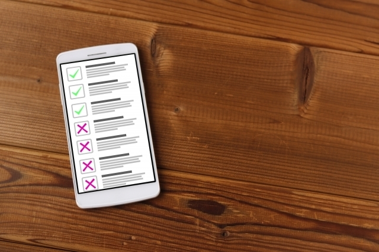
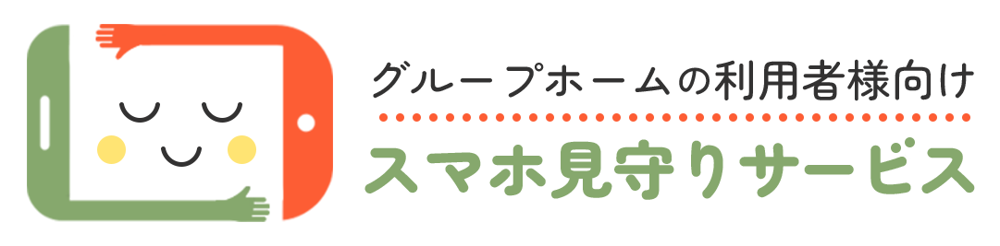
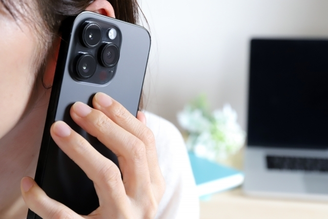
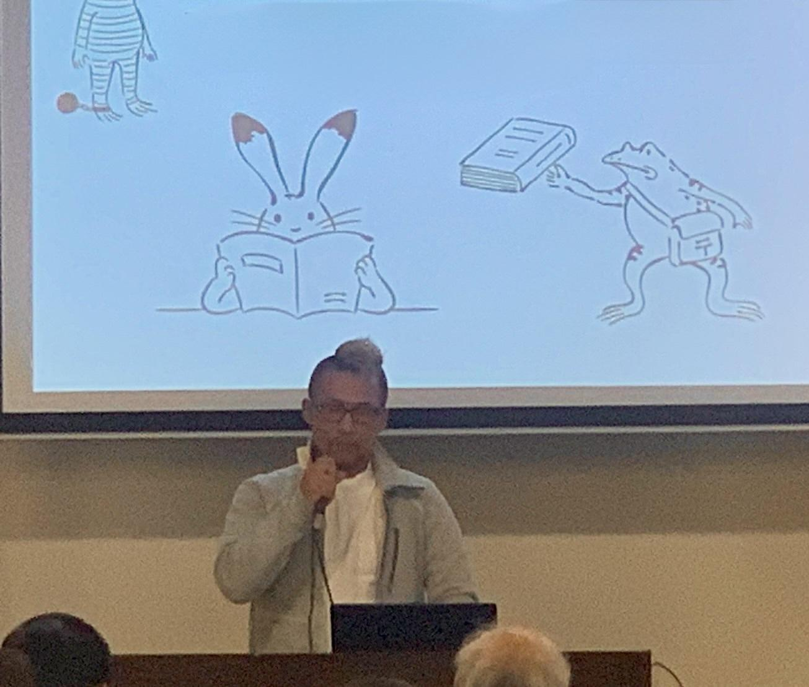

定期的なスマホチェック
オンライン面談でスマホの使い方を確認します。危ない使い方があれば、その場で直し方を伝えます。


重要なお知らせ
たくさんの声をいただき、スマホ見守りサービス「あのね」は目標としていたご相談件数500件を超えました。
いただいた相談内容をもとに、いまはサービスをもっと使いやすくする第二フェーズの開発に入っています。
このため、新規お申し込みおよびお問い合わせの受付を一旦停止しています。準備が整い次第、本ページと公式LINEであらためてご案内します。
これまでにご相談・ご協力いただいた皆さまに、お礼申し上げます。
合同会社Uribo
『スマホ見守りサービス』は、グループホームの利用者様がスマホで困らないように見守るサービスです。知的障がいや発達障がいのある人は、スマホの危ないところが分かりにくく、課金トラブル、スマホ依存、SNSトラブル、詐欺被害に巻き込まれることが少なくありません。
本サービスでは、スタッフが定期的なオンライン面談で、スマホの使い方を本人と一緒に振り返り、トラブルを早めに見つけます。家族や施設職員にも状況を伝え、本人に合ったスマホのルールを一緒に決めます。
一方的に制限するのではなく、本人が自分でスマホの使い方を決められるように、一緒に考えます。

オンライン面談でスマホの使い方を確認します。危ない使い方があれば、その場で直し方を伝えます。
スマホの使用時間とアプリの履歴を見て、使いすぎや危ないアプリを数字で示します。それをもとに本人に合うルールを作ります。
動画やゲームの使いすぎを防ぐため、生活リズムを整える習慣づくりを手伝います。無理のないスマホの使い方を一緒に探します。
課金履歴と請求を確認し、課金制限の設定や詐欺メールの見分け方を伝えます。
家族や施設職員に、本人のスマホの状況を分かりやすく報告します。どう見守ればよいかも伝えます。

課金や詐欺メールなどのトラブルが起きたとき、すぐに相談できる窓口があります。

皆さま、こんにちは。
このたびは「スマホ見守りサービス」にご興味を持って頂き有難うございます。
スマートフォンは生活の一部になりました。障がいのある人とその家族が、スマホで困らずに使えるようにしたい。そう考えて「スマホ見守りサービス」を立ち上げました。
依存症回復施設で5年間、障がい者グループホームで2年間、合計7年間、支援が必要な人のスマートフォンの使い方に関わってきました。その中で、スマホ依存、高額課金、詐欺被害、ネットトラブルに直面する人と接し、家族や支援者の悩みを多く聞いてきました。
トラブルに巻き込まれるケースのほかに、SNSで知り合った人から、ゲームの課金アイテムや現金を求められるケースも増えていると感じています。
「スマホ見守りサービス」は、フィルタリングや利用制限だけのサービスではありません。本人が自分でスマホを使えるようになることを、家族や支援者と一緒に目指します。試験運用の期間（今回のキャンペーン期間）にいただいた意見をもとに、現場で役に立つサービスに育てていきます。
誰でもスマートフォンを困らずに使える。そういう毎日を目指して、続けていきます。どうぞよろしくお願いいたします。
新規のお申し込みとお問い合わせは、一旦止めています。ご相談が500件を超え、第二フェーズの開発に入ったためです。
このページと公式LINEで知らせます。公式LINEを友だち追加しておくと、再開のときに案内が届きます。
新規お申し込み・お問い合わせの受付は一旦停止しています。
受付再開のお知らせは、本ページと公式LINEで行います。
| 【運営主体】 | 合同会社Uribo スマホ見守り支援チーム |
|---|---|
| 【会社名】 | 合同会社 Uribo |
| 【代表者名】 | 代表社員 藤原 寛 |
| 【設立年月日】 | 令和7年2月6日 |
| 【所在地】 | 〒899-4325 鹿児島県霧島市国分松木町18番27号206号 |
| 【受付の状況】 | 新規のお申し込みとお問い合わせは、一旦止めています。再開は、このページと公式LINEで知らせます。 |